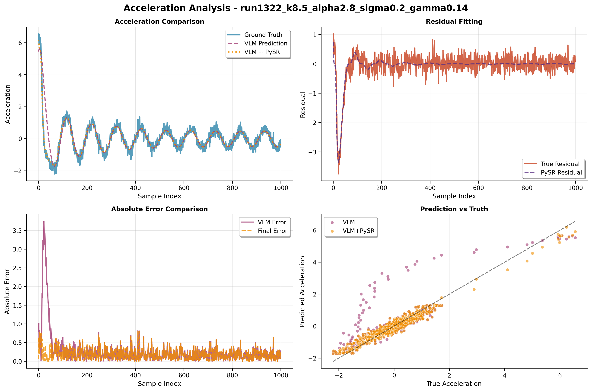
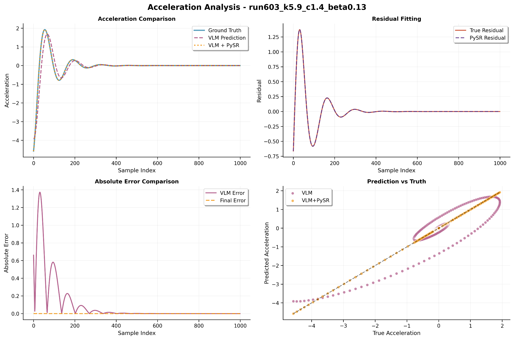
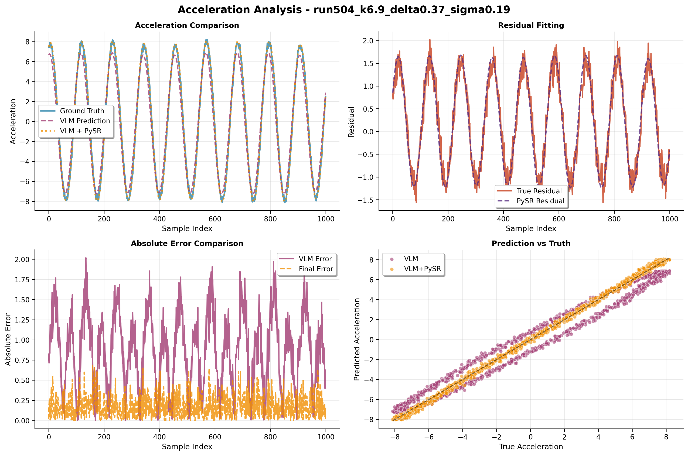
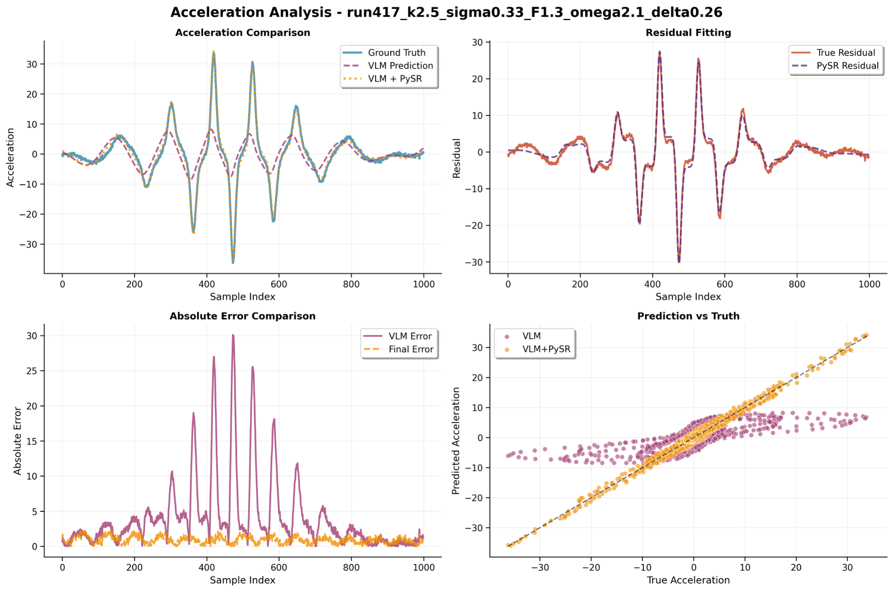

Case Study & Analysis
Complex System: Non-linear Damping with Stochastic Noise
We examine a challenging system governed by a(t) = -kx - cv³ + η(t), combining linear restoring force,
non-linear damping, and stochastic noise. This case demonstrates VIPER-R1's ability to identify and integrate
components with fundamentally different characteristics.

Phase space and trajectory analysis of complex dynamical system
Chain-of-Thought Analysis
Visual Pattern Recognition
- Oscillatory x(t): Linear restoring force (-k·x)
- Spiral structures in phase space: Non-linear damping (-c·v³)
- Irregular fluctuations: Stochastic noise η(t)
Ground Truth
a(t) = -1.542x - 2.766v³ + 0.450η(t)
VIPER-R1 Output
a(t) = -1.454x - 2.834v³ + 0.447η(t)
Remarkable Accuracy: The model correctly identifies all three physical components with high quantitative precision
Additional Case Studies

Damped Oscillator
Linear system with velocity damping
a = -kx - cv

Driven System
Periodic external forcing
a = -kx + F₀cos(ωt)

Non-linear Potential
Cubic restoring force
a = -kx - αx³

Multi-scale Dynamics
Multiple time scales
a = -k₁x - k₂x cos(ωt)